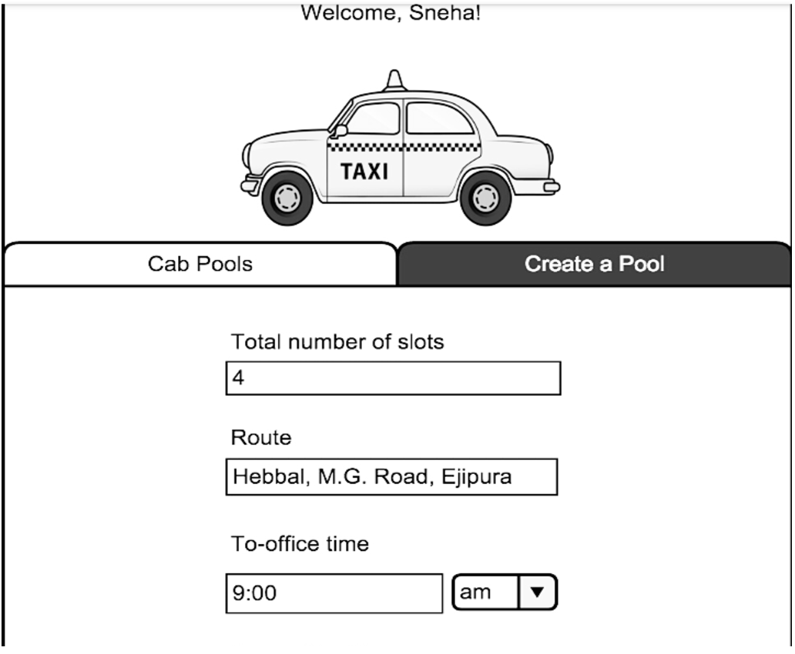

Danglay
Problem :
As a new joinee to the company, one of the questions I had was if anyone lived close to my place, someone I could travel to and from work with. Asking around it was evident that that a lot of people were looking for the same thing. People usually tried to solve this problem by sending out emails to the entire office asking for people to pool with. The problem with this method was that there was no way for new joinees to know of the emails that were sent out before and were forced to send one out again. The information was also not consolidated in a single place and was hard to find. This is why a few of us decided to create an application that could be used to find out information about fellow travellers.
Solution :

Roles played :
User journey creation, Development
Persona :
After asking around, and from our own experience, we were able to gather common points about the users of this application.
- Drives to work alone and looking for someone to share the ride.
- Has an Okta account.
- Willing to make small route and time adjustments to accommodate the travel partners.
User Journey :
Iteration 1
Some of the initial wireframes created by me and another team member are below:

Learnings :
- Breaking down the solution we had into small tasks that can be done parallely. Breaking them up into smaller tasks allowed us to get feedback sooner and make any changes needed faster.
- Learning how to create wireframes.
- There were times when we got carried away with some ideas, but prioritising and figuring out what can be feasibly done, given the resource and time constraints was something that we came to learn.
- Set up of infrastructure of an application from scratch, including which tech stack to use, after careful consideration of multiple features like performance, necessity and cost.
- Ruby on rails.
- Bootstrap.
Iteration 2 :
After feedback from users, we found that the things they would like to see in the future is to be able to book daily cabs. Keeping this in mind, I created some more mock ups, playing around with the UI a little more as well.


Iteration 3 :
More feedback on the above mockups led to the following learnings and implementations:
- Clunky visual design. People did not like the look and feel of the application.
- Having a seperate tab for 'Create a pool' didn't really make sense since most poeple were only doing this once in a while. This was changed to an easily available on the home page instead.
- The pop up notifications for 'request sent' was removed and the feedback was changed to be in the same place.
- The pop up notification for 'cab pool creation' was also removed and instead the user was just taken to their account page to show the completed creation.
- Most people did not understand what 'Point A' and 'Point B' meant in the route addition page for cabpool creation was, so this was replaced with colloquial language.
- People were creating pools and not deleting them if it was for just a one day use. This left a lot of unused pools in the search page. An option to set a date range on the pool was added, so the user could use this if they knew they wanted to use this for a certain period of time.
- The emphasis was changed from the type of cab pool to the area of the cab pool, as that was the information the users were most interested in.
Keeping the above things in mind the following solution was created.